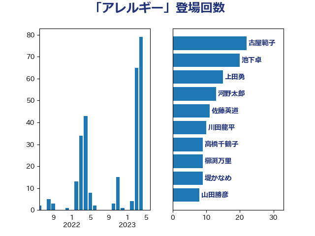

単語「アレルギー」

| 池下卓 | 日本維新の会 | 19 回 |
| 田村憲久 | 自由民主党 | 17 回 |
| 安江伸夫 | 公明党 | 12 回 |
| 佐藤英道 | 公明党 | 11 回 |
| 高橋千鶴子 | 日本共産党 | 9 回 |
| 後藤茂之 | 自由民主党 | 7 回 |
| 西村康稔 | 自由民主党 | 7 回 |
| 秋野公造 | 公明党 | 6 回 |
| 国光あやの | 自由民主党 | 5 回 |
| 中島克仁 | 立憲民主党 | 3 回 |
| 寺田静 | 無所属 | 3 回 |
| 河野太郎 | 自由民主党 | 3 回 |
| 塩田博昭 | 公明党 | 2 回 |
| 山田勝彦 | 立憲民主党 | 2 回 |
| 川田龍平 | 立憲民主党 | 2 回 |
| 村井英樹 | 自由民主党 | 2 回 |
| 橋本聖子 | 無所属 | 2 回 |
| 穂坂泰 | 自由民主党 | 2 回 |
| 自見はなこ | 自由民主党 | 2 回 |
| 若宮健嗣 | 自由民主党 | 2 回 |
| 若松謙維 | 公明党 | 2 回 |
| 角田秀穂 | 公明党 | 2 回 |
| こやり隆史 | 自由民主党 | 1 回 |
| 串田誠一 | 日本維新の会 | 1 回 |
| 伊藤孝恵 | 国民民主党 | 1 回 |
| 北神圭朗 | 無所属 | 1 回 |
| 古川俊治 | 自由民主党 | 1 回 |
| 吉田統彦 | 立憲民主党 | 1 回 |
| 坂本哲志 | 自由民主党 | 1 回 |
| 大野泰正 | 自由民主党 | 1 回 |
| 宮本徹 | 日本共産党 | 1 回 |
| 小泉進次郎 | 自由民主党 | 1 回 |
| 山本博司 | 公明党 | 1 回 |
| 平山佐知子 | 無所属 | 1 回 |
| 打越さく良 | 立憲民主党 | 1 回 |
| 末松義規 | 立憲民主党 | 1 回 |
| 本田顕子 | 自由民主党 | 1 回 |
| 梅村みずほ | 日本維新の会 | 1 回 |
| 梅谷守 | 立憲民主党 | 1 回 |
| 武井俊輔 | 自由民主党 | 1 回 |
| 池田佳隆 | 自由民主党 | 1 回 |
| 湯原俊二 | 立憲民主党 | 1 回 |
| 源馬謙太郎 | 立憲民主党 | 1 回 |
| 牧島かれん | 自由民主党 | 1 回 |
| 田畑裕明 | 自由民主党 | 1 回 |
| 石井章 | 日本維新の会 | 1 回 |
| 石川博崇 | 公明党 | 1 回 |
| 石橋通宏 | 立憲民主党 | 1 回 |
| 福島みずほ | 社会民主党 | 1 回 |
| 福重隆浩 | 公明党 | 1 回 |
| 緑川貴士 | 立憲民主党 | 1 回 |
| 芳賀道也 | 国民民主党 | 1 回 |
| 茂木敏充 | 自由民主党 | 1 回 |
| 萩生田光一 | 自由民主党 | 1 回 |
| 藤井比早之 | 自由民主党 | 1 回 |
| 藤田文武 | 日本維新の会 | 1 回 |
| 長妻昭 | 立憲民主党 | 1 回 |
| 青木愛 | 立憲民主党 | 1 回 |
| 高木かおり | 日本維新の会 | 1 回 |
| 高橋光男 | 公明党 | 1 回 |